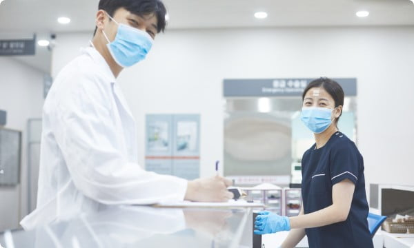
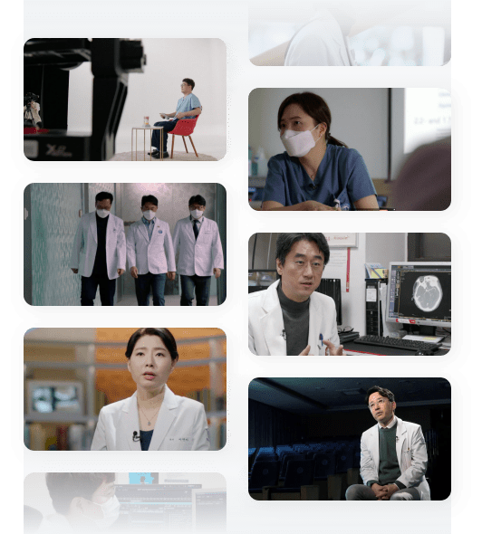
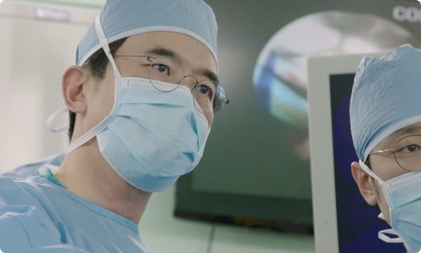

명의 프로그램 소개
방송시간
1TV 금요일 밤 9시 50분 본
1TV 토요일 밤 9시 55분 재
1TV 목요일 오후 2시 10분 전재

의학 프로그램은
시대의 메가 트렌드입니다
시대의 메가 트렌드입니다
질병 정보를 알려주는 교양 프로그램에서 의료 현장을 소재로 한 드라마까지 의학 프로그램 홍수시대라 해도 과언이 아닙니다
이는 인기 아이템으로 프로그램을 만드는 방송 정책이 때문이 아니고
다른 곳에서도 하니까 우리도 한다라는 유행 때문도 아니며
웰빙과 몸에 대한 성찰을 따라가는 시대의 메가 트렌드라고 전문가는 말합니다
이는 인기 아이템으로 프로그램을 만드는 방송 정책이 때문이 아니고
다른 곳에서도 하니까 우리도 한다라는 유행 때문도 아니며
웰빙과 몸에 대한 성찰을 따라가는 시대의 메가 트렌드라고 전문가는 말합니다


명의는 정통 의학 다큐멘터리입니다
질환자의 가슴 아픈 사연을 소개하기보다 질병을 치료하기 위해 밤을 새워가며
고민하는 의료진의 모습을 담고, 리얼한 병원 현장을 소개하기보다는 새로운 치료법과
수술법을 개발하기 위해 노력하는 의사들의 진지한 표정에 주목하는 다큐멘터리입니다
그 최고점에 서있는 소위 이 시대의 명의는 각종 질환으로 고통스러워하는
환자들에겐 신과 같은 존재입니다
많은 사람들에게
명의만의 통찰력을 전달합니다
명의만의 통찰력을 전달합니다
EBS 메디컬 다큐멘터리 명의는 현직 의사를 대상으로 한 설문조사를 바탕으로 각 분야 최고의 명의를 선정합니다
명의가 환자와 질병을 대하는 치열한 노력과 더불어 질병에 대한 정보,
그리고 명의만의 통찰력을 미디어를 통해 전달하면서 건강한 개인을 넘어 건강한 사회를 만들어가고자 기획된 프로그램입니다
명의가 환자와 질병을 대하는 치열한 노력과 더불어 질병에 대한 정보,
그리고 명의만의 통찰력을 미디어를 통해 전달하면서 건강한 개인을 넘어 건강한 사회를 만들어가고자 기획된 프로그램입니다

명의 제작진
-
C P김우철
-
기 획김한중
-
P D장금희 윤성일 양성부 서상원 임완식 박경래
-
작 가고희갑 김희나 안선효 양희 김미수 조미진
-
조연출이현희 윤지선 백여정 조세연 신다연 김도현
-
서브작가신지향 송지인 박규리 이새봄 홍지우 최현주